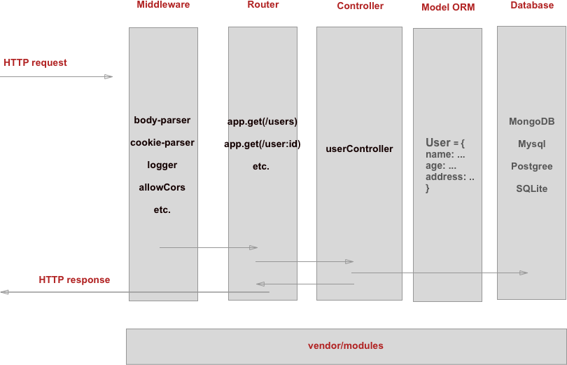

Arquitetura Base p/ uma API em Node JS:
app.get('/books?', function(req, res) {
res.send('/book ou /books');
});
app.get('/books/:id', function(req, res) {
res.send('/book/(\w+)');
});
GET /book/3/49 → req.params = {id: '3'}GET /queries?book=3"title=papeis%20avulsos → req.query = {book: '3', title: 'papeis avulsos'}Lidando com requisição e resposta de origens diferentes!
micro-Framework (by Laravel) para desenvolvimento de API em PHP: Lumen
env.examplephp -S 127.0.0.1:8080 -t public/php artisan make:migrationphp artisan db:seed